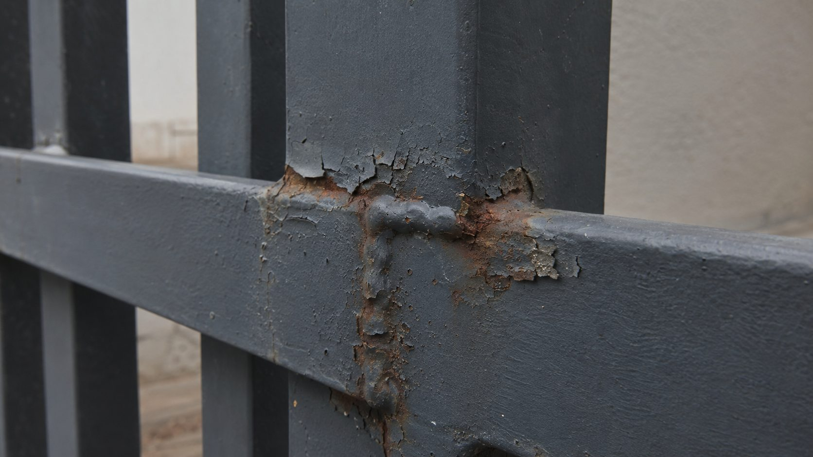
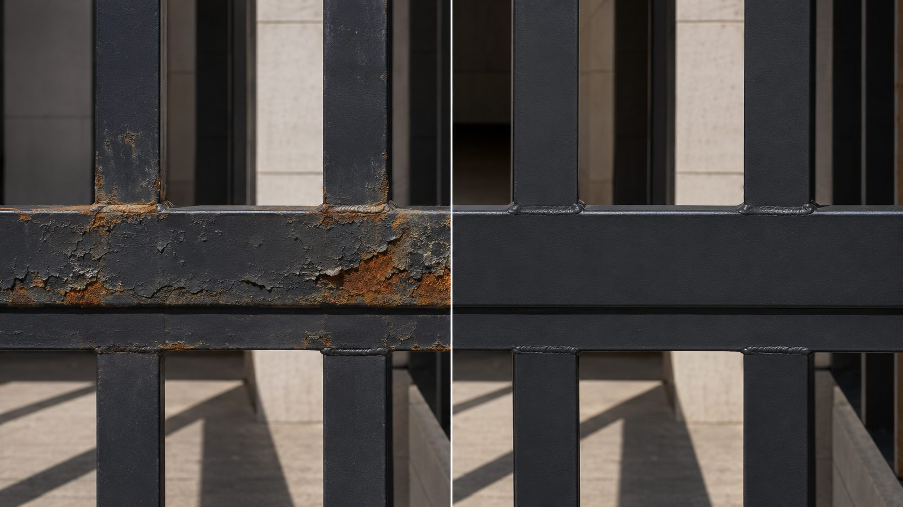

Services · Maintenance & Repair
Rust doesn't stop on its own
Treatment, recoating, realignment and automation servicing — on our metalwork and on other people's.

Coating failure at weldWhat we do
Services
Rust Treatment
Mechanical removal to sound metal, conversion treatment, primer and topcoat.
Strip & Recoat
Full removal of failed coating and re-application to a specified system.
Realignment
Sagging gates, dragging leaves, dropped hinges, worn rollers and tracks.
Automation Service
Motors, safety edges, remotes, intercom and access control fault-finding.
Assessment first
Sometimes the honest answer is "replace it"
Surface rust on sound metal is worth treating. Corrosion that has eaten through section, or a frame that has racked out of square, usually isn't — you pay twice and the problem returns.
We assess and tell you which one you have, with the reasoning. If a repair buys you two years and a replacement buys fifteen, you should know that before deciding, not after.
Painting over rust is not a repair. It hides the problem for one season. We won't quote it, and it's worth knowing when someone else does.

Before / AfterPrevention
Making the next one last longer
Usually preparation, not paint. Coating applied over mill scale, over existing rust, or without a primer suited to the exposure will lift within a couple of seasons here. Welds and cut edges are where it almost always starts.
Coastal properties need inspection more often than inland ones. Rinsing salt deposits off, keeping drainage paths clear, and catching coating damage early costs far less than recoating. Gate mechanisms benefit from periodic lubrication and alignment checks.
Yes, and a good share of this work is exactly that. We'll tell you what was done well and what wasn't, without using it as a sales pitch for replacement.
Send a photo of the worst spot.
A close-up of the corrosion and one wider shot is usually enough for us to tell you whether it's treatable.
Book an Assessment →